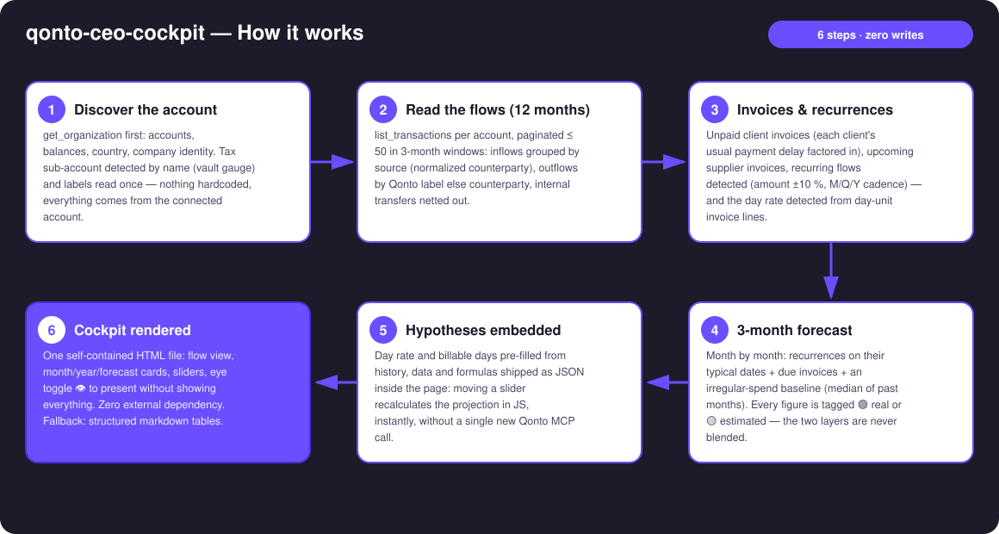
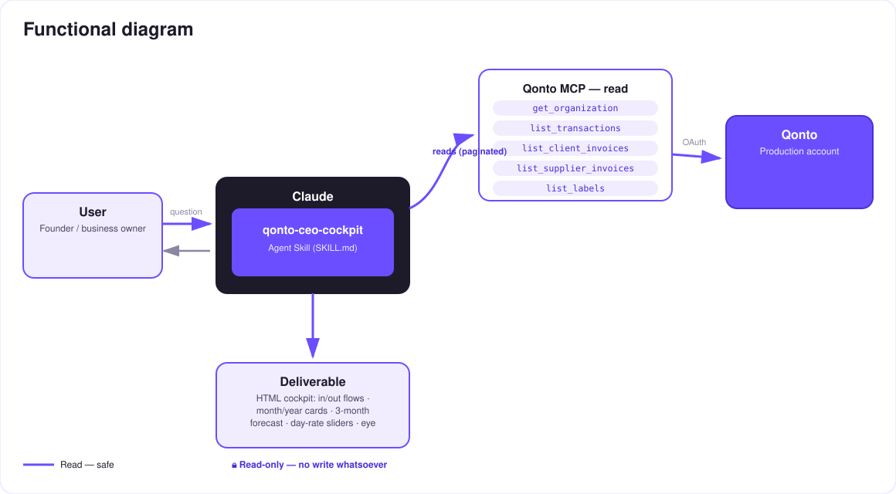

"My Company" — the founder's cockpit, generated on demand from the Qonto account.
A bank shows you a list of lines. To actually see your company — where the money comes from, where it goes, where you'll stand in three months — you need a spreadsheet… or three weeks of your accountant's time. The skill does it in one prompt: "show me my company" → an interactive, self-contained HTML dashboard:
Revenue sources → company → spending categories (Sankey-style), ribbons ∝ amounts, month/year toggle, tooltips.
Month / year / forecast per category + KPIs: consolidated balance, month net, tax vault, 3 months — 🟢 real / 🟡 estimated.
Day rate detected from invoices × billable days: sliders, instant in-page recalc — zero new MCP calls.
One click hides a sensitive line and recomputes totals — present without showing everything (banker meeting).
Would someone use this on a Monday morning? It's the Monday-morning screen: open, look, decide.
| Prerequisite | Detail | Required |
|---|---|---|
| Qonto production account | Adapts to any organization — get_organization first, nothing hardcoded | ✅ |
| Country | Universal core: flows, cards and forecast work in every Qonto country; only tax-line naming is refined for France, neutral elsewhere | ℹ️ detected |
| Qonto MCP connected | Official connector (claude.ai / Claude Desktop), OAuth login | ✅ |
| Qonto labels | Grouping key for spending categories (the cash-flow categories endpoint returns 403 on the connector); without labels: normalized counterparties | ⭕ recommended |
| ≥ 6 months of history | Below that: honest forecast degradation (🟡 tags + warning) | ⭕ |
| Day-based invoicing | Needed for the hypothesis panel; otherwise the panel is omitted, reason shown | ⭕ |


100 % read-only: no write, no transfer, nothing to approve. The deliverable is a local, self-contained HTML file — the data never leaves the machine, no external code loads. The eye toggle 👁 is a presentation convenience (the data stays in the file's source); for sharing, the skill regenerates an export where hidden lines are genuinely excluded.
| Zone | Content | Source | Interactive |
|---|---|---|---|
| Flow view | Sources → company → categories, ribbons ∝ amounts | 12 months of transactions, labels | Month/year toggle, hover, click → detail card |
| KPIs | Consolidated balance · month net · tax vault · 3-month forecast | Balances + flows + tax sub-account | Recomputed as lines are hidden |
| Category cards | Month / year / forecast, cadence badges, 🟢🟡 tags | Flows + recurrences + invoices | Eye toggle per card |
| Hypothesis panel | Day rate × billable days (3 months + rest of year) | Day rate detected from invoices | Sliders, live recalc, no MCP call |
| Output | Format | When |
|---|---|---|
| Interactive dashboard | One self-contained HTML file: inline CSS/JS, zero external dependency (CSP-safe), pure CSS+SVG bars/ribbons, light/dark theme | The deliverable — when the host renders files (claude.ai artifacts, Claude Desktop, Claude Code) |
| Conversation reply | Markdown tables: KPIs, month + year flows, 3-month forecast, priced day-rate scenarios | Automatic fallback otherwise |
| "Presentation" export | The same HTML regenerated without sensitive lines in the data | On request, for sharing |
The ≤ 3-minute demo attached to the PR walks through: the problem (a bank = a list of lines) → "show me my company" → the dashboard building itself → the day-rate slider: +€50 and the annual projection moves live, without a single API call → the eye icon hiding a line for the banker → the skill-family wrap-up. It runs live on a real production account.
| Idea | Effort | Note |
|---|---|---|
| Skill-family slot-ins: tax-pilot → vault gauge + deadlines, subscription-guardian → subscriptions card | Low | Already in SKILL.md — detected in the conversation, never required |
| Year-over-year comparison per category (trend arrows) | Low | The 12-month history is already read |
| Multi-currency consolidation | Medium | get_organization exposes account currencies |
| "Board meeting" mode: print-ready PDF | Low | window.print() + print CSS, still zero dependencies |
| New-hire / salary / purchase sliders | Medium | The client-side recalc engine is already there |